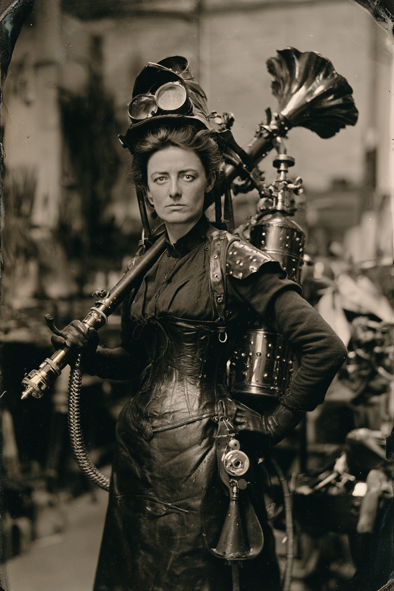

Archetyp: MAD SCIENTIST (Verrückte Wissenschaftler)
ehemals Königlich Sächsisches Polytechnikum, Dresden
Sie hat elf Aufsätze veröffentlicht, elf Studenten getötet und glaubt noch immer, die Schuld habe beim Kessel gelegen.
| Agility | d4 | 0 |
| Smarts | d10 | 3 |
| Spirit | d6 | 1 |
| Strength | d4 | 0 |
| Vigor | d6 | 1 |
| Skill | Attr. | Die | Pts. |
|---|---|---|---|
| Weird Science | Sma | d10 | 4 |
| Science | Sma | d8 | 3 |
| Repair | Sma | d6 | 2 |
| Notice | Sma | d6 | 1 |
| Research | Sma | d4 | 1 |
| Shooting | Agi | d4 | 1 |
Hintergrund. Konstanze Hallweg hielt den zweiten Lehrstuhl für angewandte Thermodynamik in Dresden und war nach jedem Maßstab, der ihr wichtig war, die begabteste Person im Gebäude. Im März 1881 führte sie einer Ministerialdelegation eine Geisterstein-Verbrennungslanze vor — im Hörsaal, mit besetzten vorderen Reihen. Die Untersuchung nannte es Kesselversagen. Die Universität nannte es einen Rücktritt. Sie nennt es einen Datenpunkt. Achtzehn Monate Vertragsarbeit in einer Smith-&-Robards-Werkstatt in Salt Lake City lehrten sie, dass amerikanisches Geld amerikanischem Spektakel folgt, und sie verließ diese Werkstatt mit einer Frachtkiste, einem Groll und einer Menge Hardware, die nicht streng genommen ihr gehörte.
Build. Geschicklichkeit W4, Verstand W10, Geist W6, Stärke W4, Konstitution W6 · Parade 2, Robustheit 5 (7 an Rumpf, Schenkeln und Kopf mit Panzerung) Verrückte Wissenschaft W10, Naturwissenschaften W8, Reparieren W6, Bemerken W6, Nachforschen W4, Schießen W4 Talente: Arcane Background (Mad Scientist), True Genius (Wahres Genie — Bennies zwingen den Marshal, auf der Fehlfunktions- oder Wahnsinnstabelle neu zu würfeln, und sie sucht sich das Ergebnis aus; so viele Bennies, wie sie hat — ihre gesamte Überlebensstrategie), Iron-Shod (Mit Eisen beschlagen — startet mit bis zu 2.000 Dollar an Höllenmaschinen, kauft künftige Katalogware 25 % günstiger) Handicaps: Arrogant — Major: sie gibt sich nicht damit zufrieden, dich zu schlagen, sie muss vorführen, dass du nie ein Faktor warst. Den Anführer der Posse spricht sie als „den Vorarbeiter“ an. · Wanted (Gesucht) — Minor: ein sächsischer Haftbefehl wegen der Dresdner Toten, und eine Pinkerton-Akte, eröffnet auf Wunsch eines S&R-Werkmeisters, der seine Kiste wiederhaben will · Ailin’ (Kränkelnd, leicht) — Minor: Geisterstein-Lunge, −1 gegen Erschöpfung. Die Falle: das Ergebnis Missgeschick auf der Fehlfunktionstabelle verursacht genau das.
Apparate.
Hallwegs Selbstthätiger Aetherbrenner, Modell III — Strahl (2 MP, Kegelschablone, 2W6 / 3W6 bei Steigerung)
Eine gut einen Meter lange Lanze aus Messing und Geisterstahl, an einem Lederjoch über der Schulter getragen, gespeist von einem geflochtenen Kupferschlauch aus einem korsettartigen Kessel auf dem Rücken. Die Mündung ist eine geriefelte Glocke wie bei einer Trompete, sechs Blätter aus gehämmertem Geisterstahl. Wenn der Kern hochläuft, singt die ganze Vorrichtung — ein ansteigender Chorton, vor dem erwachsene Männer den Hut abgenommen haben. Sie besteht darauf, das sei eine Oberschwingung des Speiseventils. Fehlfunktion — die Glocke blüht auf. Gegendruck schält die sechs Mündungsblätter nach außen, und der Kegel entlädt sich hinter ihr ebenso wie vor ihr. Sie hat das Joch viermal geflickt. Wenn es richtig schiefgeht, lässt der Geistersteinkern los: 3W6 in einer großen Schablone, zentriert auf die Frau, die das Ding hält.
Die Lehrlaterne — Illusion (3 MP)
Eine vernickelte Laterna magica von der Größe einer Hutschachtel, mit einem Geisterstein-Lichtbogen, der so heftig ist, dass die handgeschliffenen Glasplatten nach vier, fünf Anwendungen an den Rändern braun anlaufen. Sie malt die Platten selbst, und zwar wunderschön — Kavalleriekolonnen, ein brennender Wagen, ein Mann, der nicht da ist. Im Feld stellt sie damit eine Armee auf einen Höhenzug. In der Stadt verkauft sie damit Eintrittskarten. Fehlfunktion — die falsche Platte. Der Schlitten klemmt und wirft eine Platte, die sie nicht geladen hat und nicht besitzt. Es ist immer dasselbe Bild: der Dresdner Hörsaal, dritte Reihe von vorn, elf junge Gesichter, die höflich interessiert zu ihr aufblicken. Alle Anwesenden sehen es. Sie hat die Platte zweimal zerbrochen.
Ausrüstung (aus dem Iron-Shod-Kontingent): Elektrostatischer Gürtel (1.500 $ — −1 für Gegner, die mit Metallgeschossen auf sie schießen), Erfinderschürze (40 $ — +2 Panzerung an Rumpf und Schenkeln, −4 Schaden durch Feuer), schwerer Panzerhut, Gasmaske, Klapperschlangen-Detektor, motorisierter Mähzylinder. Dazu aus den 250 Dollar bar: eine raffinierte Geisterstein-Patrone, ein Taschenderringer, den sie nie abgefeuert hat, ein Palisanderkasten deutscher Reißzeuge und ein Konstruktionsbuch mit Messingschloss.
Aufhänger — die zweite Hand. Zwei ineinandergeschachtelte Geheimnisse. Das äußere: der Dresdner Kessel hat nicht versagt. Sie las an jenem Morgen den Kerndruck ab, wusste, dass er über Toleranz lag, und führte die Demonstration trotzdem durch, weil die Ministerialdelegation im Saal saß und sie das Stipendium brauchte. Das innere ist schlimmer. Ihr Konstruktionsbuch enthält Seiten, die sie nicht geschrieben hat, in einer Handschrift, die nicht ihre ist, über Nacht erschienen — und genau das beschreibt der Marshal-Teil zur Verrückten Wissenschaft (S. 90): ein Manitu flüstert ihr im Schlaf zu. Seit Kurzem beantworten die Seiten Fragen, die sie nie laut gestellt hat. Letzten Monat begann sie, absichtlich Fragen auf der Seite zu hinterlassen, um zu sehen, was zurückkommt. Es kam etwas zurück.
Warum es Spaß macht. Du bist die größte Schadensschablone am Tisch und zugleich die Person, die mit Abstand am wahrscheinlichsten die eigene Posse tötet — und du hast einen Stapel Bennies, mit denen du mit dem Schicksal darüber verhandelst, welche Katastrophe du bekommst.
Regelgrundlage: Regelnotizen · Archetyp-Notizen